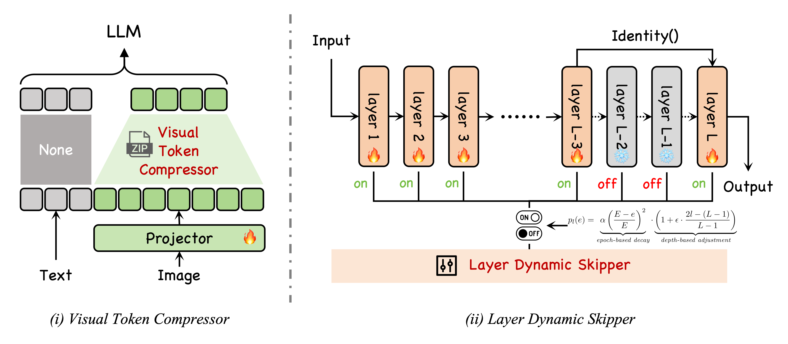

About Me
Hello! I am Kean Shi, a first-year master student at Peking University (School of Computer Science), supervised by Prof. Baobao Chang. Before that. I received my bachelor degree in Computer Science from Tianjin University in 2025.
My research interests lie in the intersection of Natural Language Processing (NLP), Multimodal Large Language Model (MLLM) and GUI Agent.
News
- 2025.09 Our proposed STS was released to arXiv, check it out 🎉
- 2025.07 Graduated from Tianjin University !
- 2024.09 Recommended to Peking University towards the M.S degree !
Publications

Education
Peking Univsersity
Tianjin University